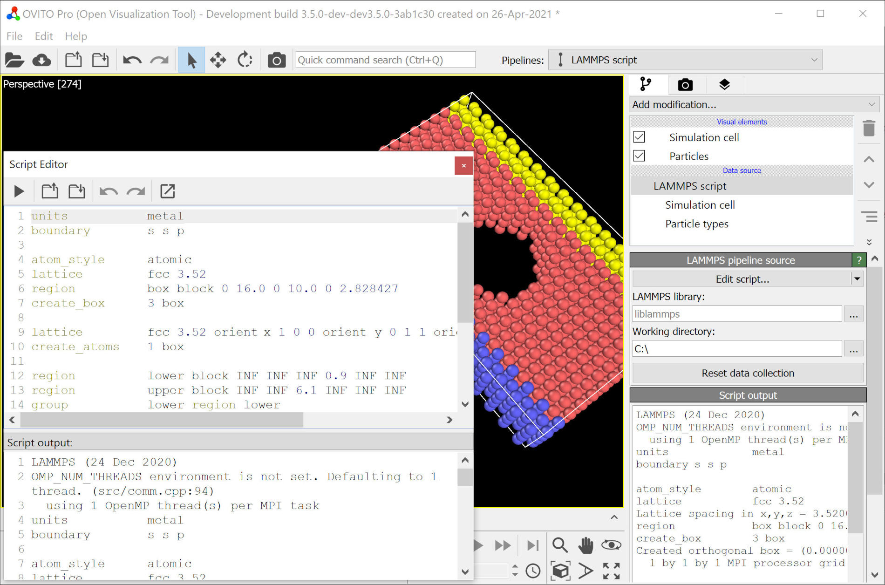

LAMMPS script pro
{kind=link}
This type of pipeline data source runs a user-defined LAMMPS input script within OVITO to dynamically generate an atomistic model serving as input of the data pipeline. This source type provides an alternative to the standard file-based source, which imports saved datasets from disk into OVITO.
This program feature can prove very useful during the development and prototyping of new LAMMPS scripts, because it gives you quick visual feedback within OVITO and lets you examine the results of LAMMPS model building commands while you write your input script.
You can insert a data pipeline with a new LAMMPS script source into the current scene using the pipeline selector widget located in the main toolbar of OVITO.
Usage
Click in the pipeline selector widget to insert a new LAMMPS data source into the current visualization scene. The new source will be initialized with a demo input script, which shows how to set up a simulation box and fill it with some atoms using LAMMPS model construction commands.
The built-in code editor of OVITO Pro (use the Edit script button to open it) lets you edit the LAMMPS script and replace the demo code with your own sequence of commands. Note that OVITO Pro also gives you the option to edit the script code in an external application such as Visual Studio Code, which provides more advanced editing capabilities than the built-in script editor.
Once you are done editing the LAMMPS script, hit the button Commit and run script (the ‘play’ icon) to let the pipeline source execute the LAMMPS input script. The final state of the LAMMPS model will automatically be translated into OVITO’s internal data representation and displayed in the program’s interactive viewports. As usual, you have the option to subsequently insert modifiers into the pipeline in order to manipulate or further process the model. Editing the LAMMPS script and re-running it is possible at any time.
OVITO executes the LAMMPS script in the context of a working directory, which can be configured
in the user interface of the LAMMPS data source. All file paths referenced in your LAMMPS script, for example
to potential parameter files or LAMMPS data files, will be resolved relative to that working directory.
Note that a LAMMPS pipeline source may also be used for the purpose of importing models from LAMMPS restart files,
which otherwise cannot be read directly by OVITO. By including a read_restart command in the input script, you can
have LAMMPS read the restart file, and the loaded model gets handed over to OVITO’s data pipeline system.
Setting up LAMMPS
To run the LAMMPS script, OVITO Pro requires a working installation of the LAMMPS simulation code on your computer. OVITO makes use of the LAMMPS Library Interface to execute the script commands within the running OVITO process. LAMMPS must have been built as a shared library and with C++ exceptions enabled for this coupling between the two programs to work.
OVITO needs to locate the LAMMPS shared library on your computer in order to load it into the process at runtime. The library file is named liblammps.so
on Linux systems, liblammps.dll on Windows, and liblammps.dylib on macOS. If that library is in the standard system search path,
OVITO Pro should find it automatically. Otherwise, you may have to enter its complete path into the input field labeled LAMMPS library.
The precompiled LAMMPS version for Windows, provided by the LAMMPS developers, fulfills the requirements described above and should work with OVITO out of the box.
Note that this feature requires a recent LAMMPS version (at least 29-Oct-2020) supporting the required library interface.